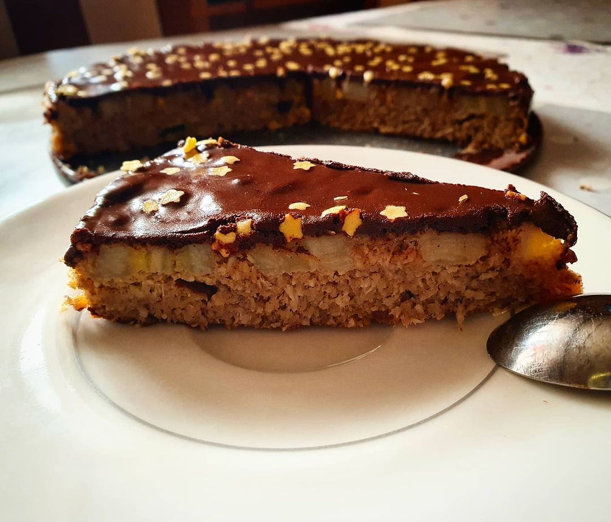

Velkonocny kolacik - obrateny bananovy kolac, inspirovany @gymbeamsk
Bez muky, vegan, bezlepkovy 😊
➡️ 3 zrele banany do cesta popucit a 3 banany narezat na kolieska
➡️ 1 kokosovy jogurt
➡️ 80 g kokosu
➡️ 1 odmerka veganskeho proteinu
➡️ 2 PL mleteho lanu alebo 2 vajka
➡️ sladidlo podla chuti
➡️ 1 CL prasku do peciva
Vsetky suroviny na cesto vymiesame. Tortovu formu vymastime kokosovym olejom, jemne vysypeme kokosom a trstinovym cukrom. Nakrajame banany na kolieska, nalejeme na banany a pecieme na 180 st cca 30 minut. Po upeceni kolac preklopime a polejeme horkou cokoladou 😋
#vegankolac #vegelife #vegecakes #vegangirl #fitreceptysk #fitkolac #bezlepkovy #glutenfreecake #bezmuky #zdravoachutne💪 #peciemezdravo #bananovykolac #banannacake #idetoajzdravo #zdravydezert #bezvycitek #peciemefit #fitpower #fitpeceni #dnespeciem #kolacbezvycitiek #cakechill #caketime #kukavicke #peciemeslaskou